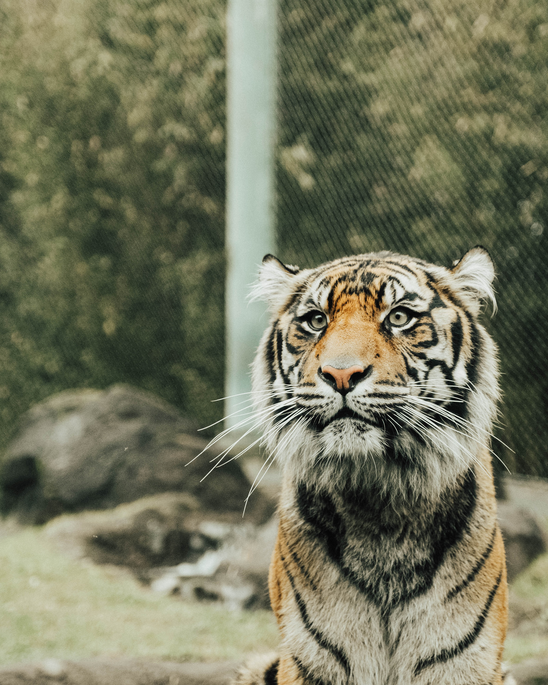

소중한 생명 동물
나는 원래 동물을 좋아했다. 하지만 소중히 생각한 적은 없었다.
나에게 동물은 그저 귀엽고, 멋있고, 예쁘기만 할 뿐이였다.
하지만 내가 가장 사랑하는 존재, 가장 소중해하는 존재를 만난 후 부터
내가 생각하는 동물은 그저 귀엽기만 한 존재가 아니였다.

인간보다 대단할 순 없어도
난 동물들의 순수한 눈이 좋았다.
인간과 지낼때랑은 다른 생각과 마음을 가지고 함께할 수 있었다.
순수함? 이기적이지 않음? 모르겠다. 어떤 단어를 써야할지 모르겠다.
인간과는 다른 그 순수한 모습이 너무 아름다웠고 소중했다.
그렇지 않은가? 인간과 함께할땐 기대, 실망, 상처, 배신감, 손해, 피해, 경쟁, 의도 등등..
수없이 많은 생각들을 가지고 감당하고 함께해야한다.
그렇지만 동물을 봐라. 어떤 동물과 함께할때 저런생각이 드는가?
너무나도 착하고 아름다운 생명체이다.

나는 나의 소중한 존재에게서
좋아하는 걸 해주는 것 보다 싫어하는 걸 안하는게 소중히 대하는 기본이라는 걸 배웠다.
그리고 나에게 득이 돼서가 아닌 어떤이유도 아닌.
같은 생명이기에 소중히 대해야 하는것 등등. 많은것들을 배웠다.
많은걸 배웠지만.. 난 그사람보다 똑똑하고 아름답지 않아서 다 말하기엔.. 기억력이 안좋다!
재능이 많을수록, 남보다 더욱 뛰어날수록. 지능이 뛰어난 인간이라면
그 힘을 약자를 위해 써야하는 것 아닌가.
그러나 인간은 고작 화장품을 위해. 고작 더 맛있는 식사를 위해.
동물을 실험하고 죽이는 것을 알고있는가.
쉽게. 코끼리는 생존을 위해 나뭇잎을 먹는다. 그러나 인간은? 고작 책상,연필 등.. 편리하기 위해.
쓰다보니 인간이 나쁘다는 글을 쓰는거 같으려나.. 라는 생각이 든다.
아니다. 이만큼 우리는 우리도 모르게 동물들을 죽이고 상처준다는걸 알리고 싶었다.